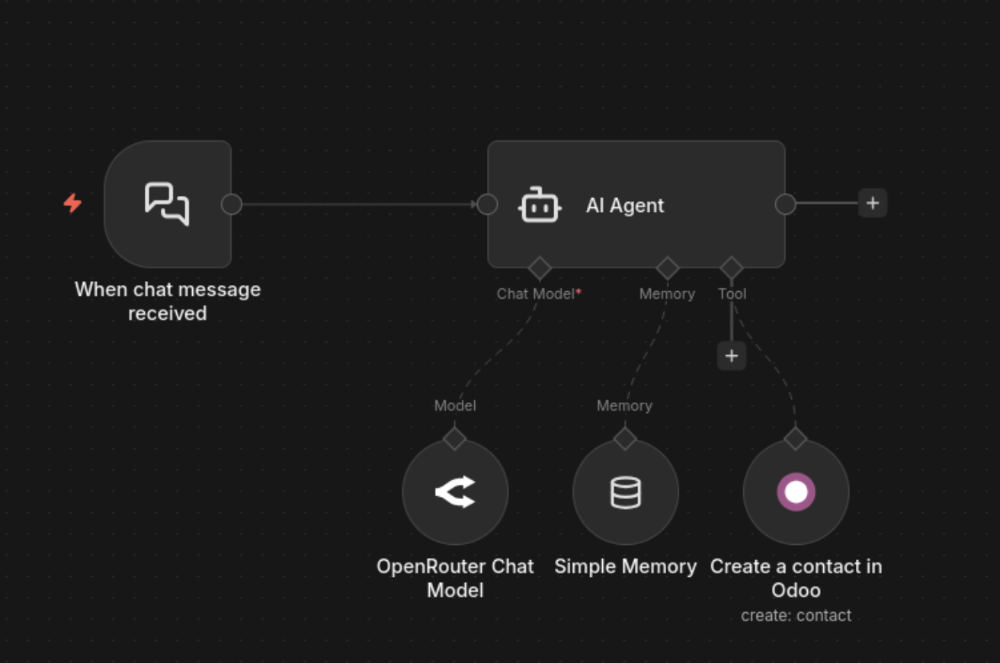
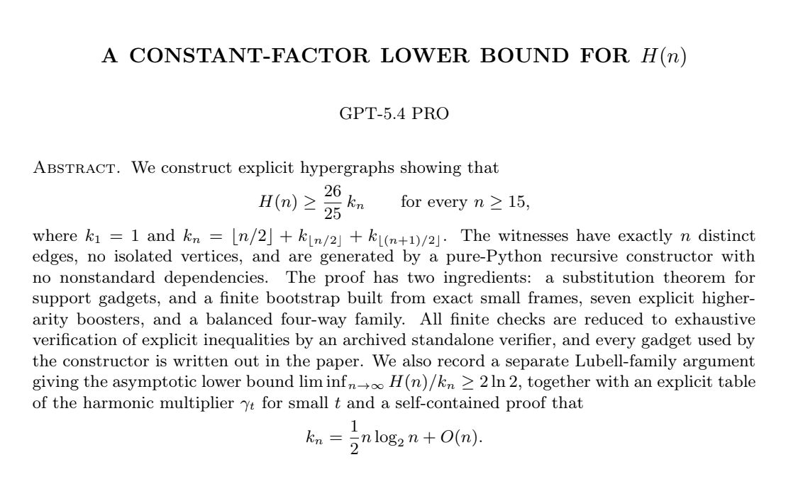
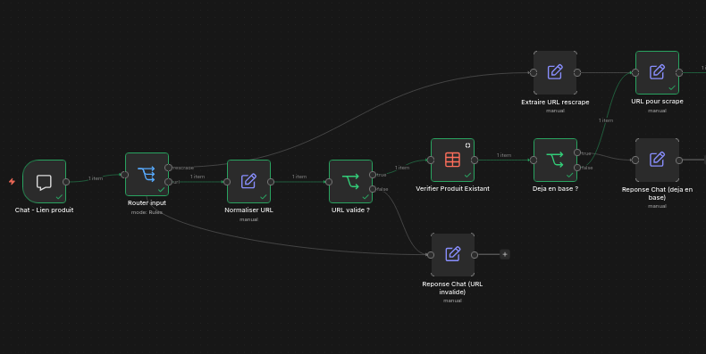
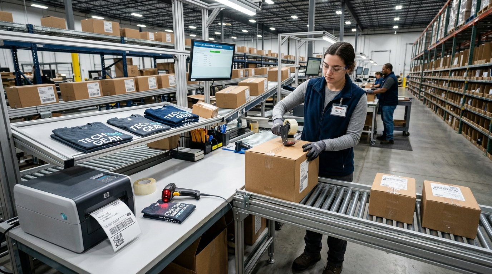
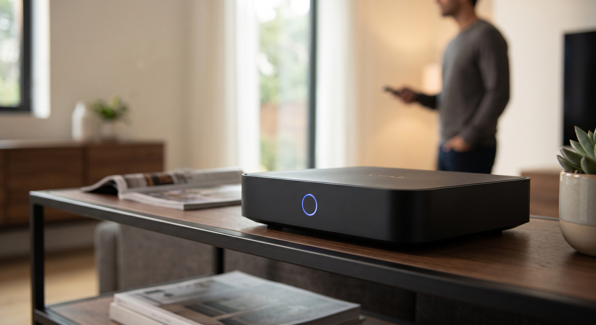

Comprendre les LLM
Changement de paradigme
IA Classique vs IA Générative
Passer d'une IA dédiée à un modèle d'intelligence générale
| Machine Learning (ML) | Large Language Model (LLM) | |
|---|---|---|
| Entraînement | Données spécifiques pour une tâche ou domaine limité | Très large corpus de texte du savoir général humain |
| Principes | Déterministe : prédire, classifier, scorer | Probabiliste : interpréter, raisonner, générer |
| Exemple | Détecter un défaut sur une pièce par imagerie sur une chaîne de fabrication (Computer Vision) | Traduire et synthétiser un bail locatif du vietnamien au français |
| Portée | Ultra-précis sur son périmètre, mais faible capacité de généralisation |
Capable de résoudre une grande diversité de tâches avec des performances variables |
Chapitre 1
Les LLM ?
1.1 · Pré-entraînement
Pré-entraînés sur tout l'internet
Un LLM est pré-entraîné sur (quasiment) tout l'internet public : sites web, livres, forums, articles de presse, code...

1.2
Des connaissances figées
Leurs connaissances et leurs capacités sont figées à la date d'entraînement.
1.2 · Connaissances figées
Elles n'évoluent pas avec vos messages
1.3
ChatGPT n'est pas une IA
On détaillera plus loin ce qu'est plutôt ChatGPT.
1.3 · ChatGPT n'est pas une IA
Les LLM d'OpenAI
Les LLM sont l'IA. ChatGPT n'est que l'interface qui les utilise.
1.4
Deux critères d'intelligence
Ce qui rend un LLM plus ou moins capable
1.4 · Critère 1
La valeur paramétrique
Le nombre de catégories qu'un LLM déduit de tout l'internet public pour appréhender l'information. De 1 à 3 000 milliards de paramètres.
Plus un modèle est gros, plus il fait de connexions avant de répondre.
1.4 · Critère 2
La fenêtre de contexte
La quantité d'informations qu'un LLM peut prendre en compte pour formuler une réponse.
1.5
Les degrés d'intelligence
4 paliers de paramètres, 4 niveaux de capacités
1.5 · Les degrés d'intelligence
Palier 1
📱 Tourne sur : un téléphone
💬 Capable de : converser correctement dans une langue, avec quelques erreurs
1.5 · Les degrés d'intelligence
Palier 2
💻 Tourne sur : un PC à 3 000 €
🧠 Capable de : comprendre finement le contenu, trier et catégoriser des données, faire des résumés précis
1.5 · Les degrés d'intelligence
Palier 3
🖥️ Tourne sur : une machine à 100 000 $
🤖 Capable de : faire tourner de petits agents et raisonner sur des problèmes
1.5 · Les degrés d'intelligence
Palier 4
🏢 Hébergé sur : un cluster de supercalculateurs (plusieurs millions d'euros)
🚀 Capable de : résoudre des problèmes extrêmement complexes, faire tourner de l'agentique autonome, résoudre des problèmes mathématiques vieux de 60 ans
Chapitre 2
Les agents
2.1
Qu'est-ce qu'un agent ?
Le moteur
La mémoire
Les instructions
Les outils
On lui donne des instructions générales et des outils : c'est lui qui décide comment les utiliser pour répondre au besoin.
2.1 · Panorama
3 niveaux de maturité agentique
2.2
Les agents conversationnels
Leur rôle : répondre à vos questions du mieux possible, de manière très générale.
2.2 · Agents conversationnels
Quelques agents conversationnels
2.3
Les agents de travail
Certains agents n'ont pas besoin d'être conversationnels : ils se déclenchent à partir d'événements ou de programmations.
2.3 · Agents de travail
Prêt à travailler
Pas besoin de discuter avec eux : l'instruction est déjà donnée, l'agent traite la donnée d'entrée pour remplir son travail.
2.3 · Agents de travail
En pratique

2.3 · Agents de travail
Quelques agents de travail
2.4
L'agentique autonome
L'exemple ultime : on donne un problème complexe à un agent de travail, avec un temps infini pour tester toutes les possibilités.
2.4 · L'agentique autonome
Quelques agents autonomes
2.4 · L'agentique autonome
"OpenAI a résolu un problème de mathématiques vieux de 60 ans.
GPT-5.4 Pro l'a résolu en environ 80 minutes dans un environnement agentique contrôlé."

2.5 · Exigence technique
Ça demande de gros modèles
Chapitre 3
Les automatisations
3.1
Une automatisation, c'est quoi ?
Un flux de travail qui ressemble à un programme informatique classique, comme avant l'IA. Sur certaines étapes, un LLM vient aider pour rendre le flux plus intelligent.
3.1 · Une automatisation, c'est quoi ?
Un flux, avec une étape intelligente
3.2
L'étape LLM dans une automatisation
Le moteur
La mémoireinutile ici
Les instructions
Les outilsinutiles ici
Pas besoin de mémoire : elle s'exécute une fois, dans la continuité du flux. Pas besoin d'outils : elle transforme une donnée et la transmet à la suite.
3.2 · L'étape LLM
Exemple

3.3
Ce que ça change
Exécutions plus rapides
Traitement instantané des données en quelques secondes au fil des événements, sans attente.
Travail standardisé
Résultat rigoureux, prévisible et reproductible, répondant aux standards élevés de l'entreprise.
3.3 · Ce que ça change
Aucune latitude... mais !
Contrairement à l'agent, qui décide lui-même comment répondre au besoin.
3.4
Des modèles plus petits, plus fiables
3.5
Le compromis : plus d'ingénierie
Plus rapide et plus fiable à l'usage, mais plus long à construire en amont.
3.6
Agent vs Automatisation
Le même job, deux approches
3.6 · Agent vs Automatisation
Démo : Comparaison des trajectoires
Résultats mesurés pour 100 items
3.6 · Agent vs Automatisation
Avantages & Inconvénients
| Critère | Agent | Automatisation |
|---|---|---|
| Facilité de construction | ✓ Rapide à mettre en place | ✗ Plus longue à construire |
| Fiabilité | ✗ Dégrade inévitablement la qualité | ✓ Extrêmement fiable |
| Coût en tokens | ✗ Élevé | ✓ Faible |
| Vitesse d'exécution | ✗ Lent | ✓ Rapide |
| Granularité des données | ✗ On lui donne tout, le modèle trie | ✓ Données ciblées et précises |
| Confidentialité | ✗ Difficile à cloisonner | ✓ Compatible confidentialité |
| Flexibilité | ✓ S'adapte aux flux qui changent | ✗ Flux figés, définis à l'avance |
3.7 · Conclusion du chapitre 3
L'imbrication des concepts
Le LLM comme moteur, l'agent comme composant, l'automatisation comme système global.
Chapitre 4
Cas d'usage
Cas d'usage 1
Analyse sémantique d'échanges commerciaux
Cas d'usage 1 · Problématique
Ce qui déclenche la vente reste invisible dans le CRM
Cas d'usage 1 · Solution retenue
Du flux vocal brut aux données structurées dans le CRM
Cas d'usage 1 · Bénéfices
Valorisation de la voix et intelligence commerciale
Cas d'usage 2
Automatisation logistique multi-transporteurs

Cas d'usage 2 · Problématique
Gérer 7 transporteurs en direct créait 7 goulots d'étranglement
Cas d'usage 2 · Solution retenue
Architecture SaaS, automatisation et socle de données IA
Cas d'usage 2 · Bénéfices
Performance à l'échelle et valorisation de la donnée
Cas d'usage 3
Optimisation dynamique
des tournées de réapprovisionnement
Cas d'usage 3 · Problématique
Eviter les ruptures de stock, autant que les réappros prématurés
Cas d'usage 3 · Solution retenue
Tournées optimales générées chaque matin et poussées par SMS
Cas d'usage 3 · Bénéfices
Continuité de service et sérénité opérationnelle
Cas d'usage 4
Déclinaison de contenus marketing
augmentés et multicanaux

Cas d'usage 4 · Problématique
Dépendance au studio créatif et à aux distributeurs
Cas d'usage 4 · Solution retenue
Génération automatisée et modération humaine guidée par l'IA
Cas d'usage 4 · Bénéfices